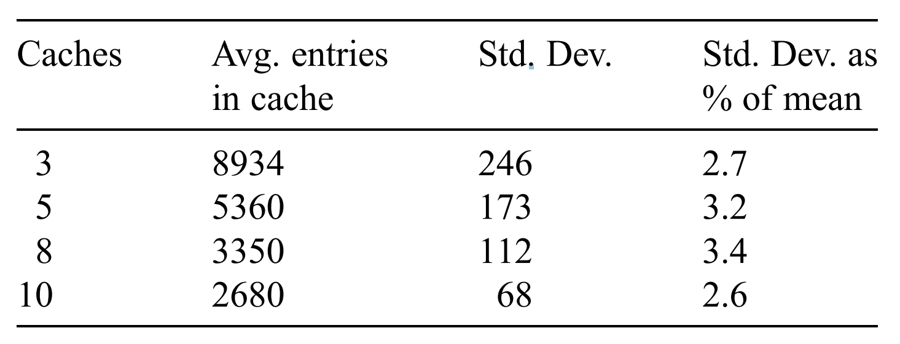

《Web caching with consistent hashing》论文翻译

本篇文章是对论文Web caching with consistent hashing的原创翻译，转载请严格遵守CC BY-NC-SA协议。
作者
David Karger 1, Alex Sherman Ł,1, Andy Berkheimer, Bill Bogstad, Rizwan Dhanidina,
Ken Iwamoto, Brian Kim, Luke Matkins, Yoav Yerushalmi
MIT Laboratory for Computer Science, 545 Technology Square, Room 321, Cambridge, MA 02139, USA
摘要
对万维网性能测量的关键是内容被提供给用户的速度。随着Web流量的增加，用户面对着日益增加的时延和数据分发故障。Web缓存是已被探索果的用来改进性能的关键策略之一。
许多缓存系统的重要问题是如何在给定时间内决定在哪儿缓存什么数据。解决方案包括组播（multicast）查询和目录策略。
在本文中，我们提供了一个基于一致性哈希的新的Web缓存策略。一致性哈希可以替代组播和目录策略，且在负载均衡和容错方面有许多其他优势。一致性哈希的性能在过去的工作中已经通过理论分析过。在本文中，我们描述了一个基于一致性哈希的系统实现和实验。实验支持了一致性哈希能够提供性能改进的论点。
1. 引言
随着万维网成为信息分发的主要媒介，能够高效可靠地交付Web流量的机制成为了需求。然而，党建的流量交付方法容易出现不可预测的实验和频繁的故障。这些延时和故障的两个主要原因是网络拥堵和服务器超载。数据在拥堵的网络中传输缓慢。过载的服务器（面对超过其资源所能支持的并发请求）要么会拒接服务，要么会以很慢的速度提供服务。因为网络和服务器的基础设施没有跟上互联网的巨大增长，所以网络拥堵和服务器过载是很常见的。
服务器和网络可能在没有任何事先通知的情况下过载。例如，在晚间新闻中被称为“当天的酷网站”的站点，可能不得不处理第二天增长了一万倍的流量。因此，提前计划能带来的好处很有限，处理负载的最佳策略是适应不断变化的环境。
1.1 Web缓存
缓存被用作提高Internet的数据交付性能和可靠性。即使在原始服务器已经过载或到该服务器的网络拥堵的情况下，附近的缓存仍可以快速地为（缓存中的）页面提供服务。这一好处给仅关心自己的服务的用户带来的利用缓存的理由，且如果缓存能被广泛应用，那么还会带来另一个好处：如果请求能够被附近的缓存截获，那么去往源服务器的流量就会减少，减少服务器上的网络流量会为所有用户带来好处。
通过一台单独的共享缓存的机器为一组用户提供服务的这种最简单的做法有很多缺点。如果缓存机器故障，那么所有用户都不能连接Web。即使缓存机器正常运行，单台缓存机器能提供服务的用户数还是受限，且在一段高强度的使用后可能成为瓶颈。最后，单个缓存可以达到的命中率主要受两个因素限制。第一，因为可用的存储总量有限，当请求重复访问因缺少空间而被驱逐的对象时，会造成“假失配（false misses）”现象。第二，缓存能提供服务的用户数的限制与缓存想尽可能地聚合用户请求的目的相驳：通常，被聚合到一起的用户请求越多，每个用户请求已被其他用户请求过的对象时命中率就会越高。
1.2 相关工作
为了达到容错、可伸缩并聚合大量请求（以提高命中率），一些团队[2, 4, 5, 7]提出了一些使用*协作式缓存（copperating caches）*的系统。这些系统都共享了确定的通用数据。每个client选取系统中的一个主（primary）缓存。来自该client的请求会通往主缓存。如果主缓存失配，请求会试图在其他协作缓存中定位被请求的资源，而不是直接访问内容服务器。如果成功，资源将会从（可能更近的）协作缓存中，而不是从较慢的内容服务器中取出。因此，其他协作缓存被用作“二级缓存”来减少主缓存的失配开销。
这两种系统的区别在于，当主缓存失配时的数据定位方式。一下策略会使用组播[7]或UDP广播[2]将请求广播到其他缓存中。这样做，除了查询的广播消耗了额外的带宽外，如果数据失配，主缓存在联系内容服务器之前必须等待所有协作缓存报告其适配，这会降低二级缓存失配时的性能。其他的策略使用了目录，这些策略或者是集中式的[5]或者需要反复广播以支持本地查询[4]。目录的查询或传输还是需要消耗带宽，且集中式的目录会成为新的系统故障点[5]。
这些系统的另一个问题是缓存中的数据冗余。任何一个缓存都可能收到对任一份数据的查询，这会导致缓存中保存了一份副本。在二级缓存命中时，网络带宽和时间被浪费在了将数据拷贝到另一个缓存上。更糟糕的是，这些拷贝会驱逐被请求的其他网页，这样削减了缓存命中数。如果协作缓存都“靠近”彼此，用户可能希望通过将每个对象仅保存在一个或少数几个机器上来得到一个（假失配更少的）更大的缓存[9]。
1.3 我们的工作
本文中，我们提出了一种消除了所有缓存间通信，但允许整个系统中的缓存表现得像一整个缓存一样的方法。Cache Resolver是我们开发的分布式Web缓存系统，其通过让client自己决定从哪个缓存请求数据的方式，消除了失配时缓存建的通信。在失配时，用户的浏览器（客户端）会直接联系应该包含被请求的资源的缓存，而不是联系主缓存来定位被请求的数据应该在其他哪个缓存=上。浏览器通过一个能将资源（或URL）映射到一个动态变化的可用缓存的集合的哈希函数，来做出决定。
哈希方法比广播和基于目录的策略提供了几个好处。一台机器可以在本地计算哪个缓存应该包含给定的对象。使用单播就足以获得对象或确定它没被缓存，这与其他方案相比较少了网络使用。它还能够比需要等待所有缓存响应的组播策略更快地发现失配。它与基于目录的策略相比，减少了维护和查询的额外开销。它还不会使系统产生新的故障点。事实上，我们的策略展示了很强的可靠性，我们将在后文中讨论。
虽然以上的好处就似乎已经足以让让用户选择基于哈希的解决方案，但我们还是探索了另一个方面：它让我们将页面（资源）定位任务推给了独立的client端。基于哈希的策略可以很容易地在浏览器级别下实现，而基于目录的定位策略因开销过大而不能在每个浏览器中实现。因此，过去的策略会假设每个client总是联系一个固定的主缓存，当主缓存失配时，它会联系其它缓存来看它们是否有请求的页面（资源）。而我们让浏览器直接决定联系哪个缓存。这移除了对中间缓存的需要，以改进响应时间。另外，因为所有client在访问同一个给定的页面的时候会联系相同的缓存，因此，无论有多少个一起协作的缓存，我们的缓存系统在查询每个页面时只会经历一次失配，而不是每个页面会在每个缓存中都会（在主缓存中）失配一次。因为我们避免页面的冗余副本，为其他页面留出了更多在缓存中的空间，所以我们可以进一步减小失配率。
虽然基于哈希的策略有很多吸引人的性质，但是为了正确地实现它，必须考虑一些重要的问题。一篇理论方面的论文建立了一个被称为一致性哈希的工具来解决这些问题中的一些[6]。这是我们当前实现的工作的基础。
在Internet草案[3]中，也出现了相似的*缓存数组路由协议（Cache Arrayh Routing Protocal，CARP）*提议。Microsoft Proxu Cache[8]中使用了CARP。CARP从直觉上与我们的方法有很多相同之处，尽管它还没被从理论上证明。我们的提议与CARP的重要的不同之处在于我们的哈希算法是如何实现的。目前的浏览器不具备支持CARP这样额方案的所有功能。CARP将所有一致性哈希的的责任交给了浏览器，这样会有很多缺点，我们会在后文中讨论。相反，我们通过不寻常（但是正确）的方式使用DNS来为浏览器对哈希函数的使用提供支持。通过对浏览器进行修改，一致性哈希可以完全在浏览器中实现，无需依赖DNS。然而，从长远看来，通过DNS方法提供的一些好处可能会使其成为正确的选择。
1.4 论文概览
在本文的第二章中，我们详细地描述了一致性哈希。在第三章中，我们描述了我们使用一致性哈希算法的Web缓存系统的实现，我们将我们的系统与其他Web缓存系统在第四章中进行了比较。在第五章中，我们提到了我们的缓存系统在其他方面的好处，如容错和负载均衡。在第六章中我们进行了总结。
2. 一致性哈希
我们的系统基于一致性哈希，它是一篇以前的理论性的论文创建的策略[6]。这里，我们将介绍一致性哈希并描述其简单的实现方式。在概述其理论证明后，我们通过实验展示了在实际场景中它工作得很好。
2.1 需求
我们的系统的目标是让任何一个client都能通过本地计算来将URL映射到包含它的缓存上。哈希是为实现这一目的被广泛使用的工具。例如，给定一个编号为0，…，22的缓存的23个缓存的集合，我们可能使用$h[u]=7u+4mod23$来将URL $u$映射到缓存$h$（我们可以将URL看做表示一个大数字的位字符串）。通常，根据对哈希函数的直觉，其倾向于把输入“随机地”分配的可能的位置上。这样的随机分布直观上看是均匀的，这意味着没有一个缓存负责处理不成比例的请求页面。哈希的这种负载均衡的特性是我们的应用程序高度需要的特性，因为负载不成比例的缓存将会成为整个系统的瓶颈。
不幸的是，标准的哈希在缓存系统中应用时会有一些缺点。或许最明显的缺点是，系统中的缓存机器数可能会随着时间上下波动。试想一下，当第24个缓存加入到刚才描述的系统中时会发生什么。一个很自然的变化是开始使用哈希函数$h’(u)=7u+4mod24$。不幸的是，在这种改变下，原本的每个URL会被映射到新的缓存上。这会使整个缓存系统中的URL都被刷新：如果系统查找一个在新位置上的URL，那么事实上它在旧位置上的缓存就没用了，会产生一次失配。信息通过Internet异步传播的这一事实会加剧这一问题。在任何一个时刻，不同的client对哪些缓存在线哪些缓存离线都有不同的信息。我们将一台给定的机器所知道的缓存集合成为它的视图（view），我们观察到，在任何时刻，系统中都有很多不同的视图。这样会有两个潜在的缺点。如果每个视图都会将URL映射到不同的缓存中，不就每个URL就会被在所有缓存中保存————这恰恰是我们想要避免的问题。另外，如果存在多种视图，那么会很难断言所有缓存都将收到相同的负载量————不同的视图可能将过多的负载导入东一个缓存中，即使每个单独的视图中的负载是均衡的。
因此，对我们的哈希函数来说，能够一致性地映射项目是很重要的：无论系统中是否存在多个变化中的视图，每个元素都应被映射到少数的机器上，这样，所有机器就会得到大致相同的负载。
2.2 一致性哈希
一个能简单实现的一致性哈希函数[6]满足了上一节中描述的需求。首先，选择某个能将字符串映射到范围$[0,…,M]$中的标准的基（base）哈希函数。再除以M，其可被看做一个映射到区间$[0,1]$（译注：此处指连续区间，此处的除以是数学上的除法而不是计算机的整除）的哈希函数，这一区间可被视为一个单位圆注2。同时，将系统中的每个缓存映射为单位圆上的一个点。现在，将URL分配给其在单位圆上顺时针移动遇到的第一个缓存，如图1所示。
注2：为了方便起见，我们称单位周长的圆为单位圆。而通常，单位圆指的是半径为1的圆。
{kind=link}
一致性哈希很容易实现，所有“缓存点”被存储在一个二叉树中，通过一次二叉树查询就可以（在哈希URL点后）找到“URL点”顺时针方向的后继节点。这可以在$O( \log n)$时间内一致性哈希到$n$个缓存。另一种实现[6]将圆划分为等长的段，并根据段对缓存点“分组”，这样，不管有多少个缓存，都可以在常数时间内查找。值得注意的是，CARP[3, 8]中提出的方案查找时间与缓存数量是线性关系，因此在大量缓存的情况下可伸缩性小得多。
出于[6]中详细介绍的技术原因，为每个缓存点制作少量副本是非常重要的————即将每个缓存的几个副本映射到单位圆上不同的“随机”的点上。这会让URL到cache的分布更均匀。
2.3 分析
现在，我们将解释为什么刚刚描述的一致性哈希策略有我们需要的性质。这是对形式论证[6]的直观总结。
我们的论证基于这样的直觉：基哈希函数把URL和缓存“随机”地映射为单位圆上的点。思考当我们向系统中添加一个新的缓存c时会发生什么。该缓存被映射到单位圆上，并“窃取”了某些其它缓存中的URL。被窃取的是哪些URL呢？是那些在圆上处于c附近的URL。根据我们的直觉，这些URL在圆上是随机的。因此，在圆上靠近c的可能很少，这意味着只有很少的URL被窃走。显然，那些没被新的缓存窃走的URL是不会移动的，我们因此可以推断出我们想要的第一个性质：当我们添加一个缓存的时候，只有少量的URL位置改变了。因此，系统中大部分的缓存项在系统被修改后仍可被命中。
相似的论点也适用于多视图问题。对于给定的缓存和项，仅当在某个视图中该缓存是离该项最近的缓存时，才会被选中。但如果缓存离该项很远，那么（根据缓存的位置是随机的这一直觉）很有可能在每个视图中，会有某个离这个项更近的缓存。这样就防止了该缓存被这一项选中。因此，仅那些靠近一个项的缓存才不得不保存它。而关于缓存位置随机的直觉告诉我们，对任何一个项，只有少数的缓存靠近它。换句话说，对任何一个项来说，即使系统中有很多缓存，也仅有少量几个缓存负责它。
这些直觉可表示为如下的形式化定理[6]。该定理涉及到一个良好的基哈希函数（用来将URL和缓存映射到单位圆上的哈希函数）。[6]中证明了按照一定原则构造的随机的通用哈希函数的表现良好。而在实践中，能够很好混合数据的标准的哈希函数（如MD5）就基本足够了。
定理 2.1[6] ： 设系统中有$m$个机器和$c$个client，每个client中有一个由任意半数缓存机器组成的集合的视图。如果每个缓存机器有$ \Omega ( \log m ) $个副本（译注：这里的副本值得不是数据副本，而是在单位圆上有缓存的点的副本，如章节2.2结尾中提到的那样。），且所有副本和URL都通过良好的基哈希函数映射到了单位圆上，那么一下性质成立：
-
平衡（Balance）： 在任意一个视图中，URL在该视图中的缓存机器上的分布是均匀的。
-
负载（Load）： 在所有视图（的聚合）中，没有一台机器上有超过$O( \log c) \times 平均URL数量 $个URL。
-
散布（Spread）： 没有URL被存储在超过$O( \log c)$个缓存上。
因此，在动态变化和不确定的Internet域中，一致性哈希是一种很好的哈希策略。
2.4 实现结果
我们列出了一些能够证明一致性哈希有用的简要分析。第一，一致性哈希是相对较快的操作。在我们的实验环境中，我们建立了一个由100个缓存且每个缓存在单位圆上有1000份副本的缓存视图。我们在奔腾II 266MHz芯片上对一致性哈希的每一个动态步骤进行计时（动态步骤包括URL字符串求值、基哈希函数求值、查找二叉树）。平均每次对哈希函数的调用需要$20 \mu s$。这大约是通过10Mbps的以太网从本地缓存传输20kB文件所需总时间的0.1%。如果我们在底层缓存视图的表示中使用桶数组（bucket array）而不是当前使用的常规的二叉树，那么这$20 \mu s$的值还能被再次显著减小。
我们还测量了一些能显示一致性哈希能在缓存间实现良好均衡的指标，正如其低负载的性质保证的那样。我们使用了来自theory.lcs.mit.edu的Web服务器的一周的日志。在此期间，总计有26804个不同的URL请求。我们在不同数量的缓存上通过我们的哈希函数计算这些不同的URL，来看一致性哈希在缓存间能把文件分布得多好。

从以上的数据可以看出，每一条数据的标准差都很小，平仅在3%左右。当数据集变大时，这一数字还会变得更好。
在第二个实验中，我们使用多个视图将1500个网页名映射到缓存中，其设计到80台机器，其中5台机器在每个视图中的上下线情况都不同。此时，$(项, 缓存)$对的数量上升到了1877个，与基数相比仅增加了25%。
3. 我们的系统
译者注：该系统是在当时技术受限的情况下设计的。
正如上文所述，我们向实现的系统似乎很简单：几个标准、非交互式的Web缓存与浏览器中的一些哈希逻辑相结合。但是当我们开始实现我们的系统时，我们很快就发现当前的浏览器还不够灵活，无法独立支持一致性哈希。因此，为了构建一个兼容当前浏览器的系统，我们广泛使用了域名系统（DNS）以支持一致性哈希。我们的Web缓存系统————Cache Resolver，由3个主要组件组成：用来存储内容的实际缓存机器、直接向虚拟缓存请求的用户浏览器、使用一致性哈希来将虚拟缓存转换为特定的缓存机器的物理地址的域名服务器（也成为决议器）。
3.1 缓存
我们安装了一个发行版的Squid代理缓存包。如果其中存储了有效的数据副本，那么代理缓存会用该数据进行应答。否则，它将从原始Web服务器拉取数据并存储一个副本。Squid使用了LRU替代策略。为了实现我们稍后将讨论的负载均衡和故障转移，我们会在与缓存在同一个物理机上运行一个用来监控Squid进程的额外的软件。当该软件被我们系统中的其他单元查询时，它会回复其状态（存活或死亡）和用字节传输速率来表示的负载，这个负载是缓存在过去30秒的时间内为Web查询提供服务的负载。
3.2 到缓存的映射
为了实现李璐蓝旗的一致性哈希，我们最初希望利用在大多数常用的浏览器（Netscape 2.0x或更高版本 和 IE3.01或更高版本）中出现的autoconfiguration函数。用户可以用JavaScript编写一个函数，在每次请求时这个函数会被调用，它会基于被请求的URL字符串来选择一个代理缓存列表以进一步联系。用户按照列表的顺序联系代理缓存，知道其联系到了响应所需数据的代理缓存。
不幸的是，autoconfiguration过于受限而无法支持一致性哈希。最根本的问题是，autoconfiguration脚本只被手动下载一次。一旦代理缓存的集合改变，那么映射函数可能会变得不正确。
为了解决这一问题，我们决定使用DNS。我们可以建立我们自己的DNS服务器，并修改它们以支持一致性哈希。这个一致性哈希会在域名解析时传给浏览器。更准确的说，我们编写了一个autoconfigure脚本，它会将输入的URL通过标准哈希映射到1000个命名的虚拟缓存的区间中。接下来我们通过DNS将这1000个缓存名通过一致性哈希映射到真实的缓存IP地址上。
在我们的测试中，我们发现某些操作系统下的某些版本的浏览器即使在其对虚拟名解析过期后，也不会重新调用DNS。如果被这种方式解析到的缓存离线，那么浏览器就无法加载页面。为了改善这一问题，我们的脚本实际上反悔了一个命名缓存列表（其中有5个命名缓存），而不是只有一个，以弥补浏览器“故障”的问题。通过返回一个列表，我们可以让这些故障的浏览器有更高的可能性以解析到工作中的命名物理缓存。列表中的最后一个值是“DIRECT”，浏览器会知道此事其他命名缓存都失效了，直接连接内容服务器。
3.3 DNS服务器
我们的DNS系统的主要功能是将用户的JavaScript函数生成的虚拟命名解析为缓存的真实物理IP地址。我们使用了许多DNS服务器，每台都运行着未修改的实现了DNS协议的BIND 8.0发行版。BIND会从一个记录文件中读取虚拟命名到IP地址的映射，该文件被另一个名为“dnshelper”的进程动态更新。dnshelper监视缓存机和，并运行一致性哈希将所有的1000个虚拟命名（见章节3.2）映射到仅存活的缓存机器的区间中。如果可用的缓存集合改变，dnshelper会通过信号通知BIND重新加载包含了新的映射的记录文件。
大量的虚拟缓存一位置每个缓存只接受整个系统负载的一小部分。一致性哈希保证分配给每个缓存的虚拟命名的数量在各个缓存中均匀分布。这两个事实共同确保了网页的负载会均匀地分布在缓存上。我们将在章节5.2中使用一致性哈希聊描述更高级的负载均衡策略。
3.3.1 关于DNS的讨论
我们对DNS的使用某种程度上违背了我们要讲定位功能放在浏览器中的计划。然而这样做可以增加几道防线。NDS是定位对象的标准工具，我们使用了它的能力而不是去费力实现我们自己的协议。注意，当请求任何页面时，通常一个无缓存的浏览器会执行DNS解析来找到网页服务器。我们只是简单地用一个标识符来替代实际的服务器。这种DNS解析通常会在附近的DNS解析器中完成，因此不会增加网页请求的额外延时。我们的系统依赖于DNS的正常功能，而本来任何的DNS故障都会导致用户访问中断，所以我们并没有真正为系统增加新的故障点。
关于DNS的第二个争论是，如果我们的系统能够证明它自己，那么可以取消请求前的查询。DNS仅用来创建到IP地址的1000个命名的集合的映射。只需对浏览器进行少量修改，就可以轻松地将这种映射存储在浏览器中。事实上，目前浏览器已经可以保留约10个DNS条目的缓存，我们需要做的仅是将这个缓存增加到1000个。由于一致性哈希的属性，这些条目甚至不需要特别去更新到最新版。因此，浏览器可以采用十分懒惰的方式更新其映射，如果其响应失败就丢掉这个缓存，并在其打开到一个缓存的连接时懒式地下载可用缓存的更新。
尽管我们能够去掉DNS，但是目前我们没有理由这样说。在我们的实验中，根本注意不到DNS解析对我们系统性能的影响。
4. 测试
因为我们相信我们的设计可以保证比我们研究过的现有的Web缓存系统提供更好的性能，所以我们实现了我们自己的缓存系统。在本文中，我们将我们的Cache Resolver与两个类似的系统进行了比较：Harvest系统和在章节1.2中描述的CRISP。我们得到的挤过证实了我们的假设。
4.1 测试配置
为了测试我们的系统，我们使用了由连接到一个100Mbps的交换机的7台机器组成的网络。四种三台机器运行Squid，即代理缓存程序。另一台机器被指定为Web服务器，其被放在10Mbps的连接上以让到Web服务器的数据传输开销更高。另一台机器运行BIND的副本，且为指定的域名服务器，其使用一致性哈希将1000个命名解析到3个代理缓存上。第6个机器是用来运行测试驱动的。最后一个机器或被用作CRISP的测试目录，或Harvest系统中的父级缓存的测试。
4.2 测试驱动
我们使用Surge[1]作为测试驱动程序，Surge是一个由Boston University开发的Web负载生成工具。Surge的设计者对Web流量进行了研究，它们开发的生成器能够更合理地模拟对象请求的大小和频率的分布。在测试前，Surge会生成一个文件数据库并拷贝到Web服务器。我们生成了一个包含不同大小的1500个文件的数据库，其总大小为34Mb。Surge还会生成测试期间的请求序列，每个文件可能被超过一次请求。client的数量和每个client中运行的线程的数量是Surge的参数。之后，Surge会按照请求计划一起模拟Surge创建的client。每个请求表示一个嵌入了许多Web文件的对象，文件可能在不同对象间有重叠，且不同文件可能被请求不同够次数。Surge模拟的Web服务器负载的数学分布在[1]有详细的描述。
我们修改了Surge以在两个不同的模式下运行：Common模式和Cache Resolver模式。Common模式表示通用的缓存配置，一系列用户总是使用一个本地缓存，当缓存失配时，该缓存或者从其他换种中拉取数据，或者从主内容服务器中拉取数据。对于Common模式，我们在三个client上运行Surge，每个cliente金合器自己的代理缓存通信。（Surge中的一个client会运行许多个线程，以代表一系列用户。）Cache Resolver模式是为了测试我们的系统而设计的。在该模式下，每三个client执行一个类似用户使用的autoconfiguration函数的简单的哈希函数。该函数以被请求的URL作为输入，并返回一些列虚拟命名。Surge的client通过我们的DNS单元把命名解析为IP地址。
4.3 结果
我们在不同的缓存代理配置下运行了对比Cache Resolver模式和Common模式的测试。接着，我们分析了代理缓存的日志来比较不同的测试中的失配率。我们期望看到Cache Resolver模式的失配率较低，其原因有二。首先，Cache Resolver模式为特定的缓存分配数据。另外，在这些测试中有缓存容量在9Mb到36Mb间的情况。因为数据库总大小为34MB，较小的缓存会有更高的失配率，因为可能在LRU中被强制挤出。在每个我们运行的测试中，缓存已经从之前额数据存储中清空。在每个测试中，三个缓存的容量相等。在不同的测试中，缓存的容量选取为9、12、18、24、30个36Mb。在最初的一系列测试中，我们没有配置让代理缓存与另一个代理缓存通信。在失配时，它们简单地从源服务器拉取数据。在这种基本配置下，图2显示了Common模式比Cache Resolver模式有更高的失配率。当缓存容量更小时，失配率的差异甚至更高，因为Common模式下的数据冗余带来了更严重的负面影响。
{kind=link}
我们还使用我们的缓存测试了另外三个常用的缓存系统配置。我们测试了Sibling配置，即所有三个缓存都被配置为sibling，且在失配时使用组播协议来检查数据是否在其他缓存上。我们还测试了Hierarchy配置，即我们sibling按照Harvest方法的风格添加了另一个缓存作为父级缓存。最后，我们还测试了CRISP配置，即建立一个中央目录，它会被所有的缓存在失配时查询。对于每个系统，我们测量了主缓存的失配率（用户查询的第一个缓存的失配率）和系统失配率（整个缓存系统的失配率，即没有缓存持有所需数据的情况）。图3展示了三种配置下的主缓存失配率，其与图2中Common Cahce模式的失配率相似，且所有配置的系统失配率几乎都与Cache Resolver模式的失配率一样好。对于这三个系统，主缓存失配会导致额外的缓存间通信，包括检查哪个缓存持有所需数据及缓存间数据传输。另外，缓存间数据传输会导致数据冗余，这使缓存的磁盘和RAM中剩余空间变小，最重要的是RAM空间是为用户提供快速服务的空间。当用户通过哈希函数决定使用哪个缓存时，可以避免关键循环中的额外通信及带来的负面效果。
{kind=link}
5. 扩展
本章中，我们将讨论对我们基本系统的扩展，其为用户提供了局部性、负载均衡和容错。
5.1 局部性
无论哪种缓存策略，用户的延迟都很大程度上受缓存服务器的临近度影响。我们的系统确保用户总能被在他们物理上本地区域的缓存服务。我们的缓存按照地理区域划分，用户仅被在其区域内的缓存服务。我们将能够决定用户地理位置区域的信息放在了用户浏览器的JavaScript函数中。该JavaScript函数是被定制化的：当用户下载它的时候，用户可以选择一个区域。虚拟命名会按照以下格式被JavaScript函数生成：A456.ProxyCache3.com，其中456是URL的哈希，3表示地理区域变量。
随后我们把我们的DNS系统划分为两层结构。最上层DNS服务器解析将包含地理位置信息的命名部分，并将用户的DNS解析器定向到一组与用户地理区域相关的底层DNS服务器。底层DNS服务器被按照缓存的指定地理位置区域放置，它们将虚拟命名解析为这些缓存的IP地址。
例如，我们解析A456.ProxyCache.com这样的命名的时候，用户DNS解析器首先将其定向到顶层DNS，其解析命名的第二部分ProxyCache3，随后该DNS将其定向到一组底层DNS服务器，它们会解析命名的第一部分A456。底层DNS根据本地服务器的地理位置解析，这些服务器对于用户来说也是在本地的。
5.2 高级负载均衡：热门网页
我们在第二章中提到，因为每个局部区域的服务器被分配了相同比例的虚拟命名，所以我们实现了服务器之间的负载均衡。当大多数的项被以相同的频率请求时，这可能是一种很好的近似。然而，在万维网上，许多项是非常流行的，而其他项却不是。例如，像CNN头版这种流行的项，其被请求的频率比其他项多得多。这种“热门”的项会导致缓存了这些项的缓存服务器的负载很高。这样的服务器很容易被请求到过载，其要么挂掉要么只能以非常缓慢的速度为用户提供服务。
为了解决这种情况，在理想情况下，我们想知道那些资源是热门的并确保热门资源能被更多的缓存服务。这一决策需要由最终决定虚拟命名和IP地址的映射的底层DNS服务器进行。其解决方案是，讲“热门”的虚拟命名映射到一个IP地址列表，而不是一个IP地址。默认情况下，当配置为返回一个列表时，BIND DNS循环调度该列表，所以当在DNS中查询虚拟命名时，仅一小部分用户会得到一个特定的IP地址。因此，热门虚拟命名的负载将会被分散到BIND DNS返回的IP地址列表中。
不幸的是，确定哪些虚拟命名热门哪些不热门并不是容易的事。然而，我们可以从每个缓存上的负载的测量值汇总得到一些启示。因为DNS服务器知道虚拟命名到IP地址的映射，我们可以确定哪个虚拟命名的集合负责有高负载的特定内存。这个集合包括一个或多个虚拟命名。因为我们想要防止服务器过载，我们会主动地将映射到热门服务器的所有虚拟命名分散到该区域的所有缓存中。（这意味着我们立即将集合中的每个虚拟命名映射为该缓存区域中的所有缓存IP地址的列表，这样这个虚拟命名的负载就会被分散到整个区域中。）然后，我们通过每次删除一个IP地址的方式慢慢减小映射的大小。如果任一次删除导致了服务器上的负载再次增加，我们将删除的IP地址恢复，并从分散的命名的其他自己中删除。通过这种方式，很快我们就能使映射到不同缓存列表大小的虚拟命名达到平衡。
5.3 容错
除了高效的缓存管理和负载均衡，我们的系统还有非常高的容错能力。首先，因为物理IP地址是用户通过虚拟命名抽象出来的，所以可以避免用户访问到个别故障的缓存。当试图连接到这些机器时，浏览器不需要设置超时，因为（缓存故障时）虚拟命名会被解析到替代的IP地址。另外，我们的系统消除了单点故障，如CRIPS的中央目录故障。如果中央目录故障，CRISP系统就会崩溃，缓存机器会作为独立的缓存工作。在我们的系统中，不存在单独负责关键任务的单元，如CRIPS中的中央目录、为一组用户提供系统入口点的主缓存。在Cache Resolver中，只要DNS机器正常工作，那么虚拟命名就会被解析。且只要区域中的一些缓存存活，那么虚拟命名就会被解析为它们的IP地址。
6. 结论
在第四章中，我们将我们的系统与其他缓存系统进行了比较。我们论证了，当用户负责知道哪个缓存有所需数据时，可以避免用户请求的关键循环中的重大开销。哪个缓存持有数据的信息可通过哈希函数提供给用户。由于大型网络（如Internet）的用户可能对实时的缓存有不一致的视图，所有我们间隙使用一致性哈希函数，即使用户视图有冲突，其也可以很好地均衡数据。此外，我们还描述了使用了一致性哈希函数的系统实现，以展示在万维网中集成这样一个系统是非常实用的。我们的系统解决了局部性问题、缓存间的负载均衡、并拥有其他Web缓存系统缺少的高层容错能力。总之，我们相信，通过对缓存的高效使用，一致性哈希能够大幅提升万维网的效率。
致谢
感谢Frans Kaashoek提供的帮助和建议。
参考文献
[1] P. Barford and M. Crovella, Generating representative Web workloads for network and server performance evaluation, in: Sigmetrics, 1997.
[2] A. Chankhunthod, P. Danzig, C. Neerdaels, M. Schwartz and K. Worrell, A hierarchical Internet objectcache, in: USENIX, 1996.
[3] J. Cohen, N. Phadnis, V. Valloppillil and K.W. Ross, Cache array routing protocol v. 1.0, http://www.ietf.org/internet-dra fts/draft-vinod-carp-v1-03.txt, September 1997.
[4] L. Fan, P. Cao, J. Almeida and A.Z. Broder, Summary cache: a scalable wide-area Web-cache sharing protocol, Technical Report 1361, Computer Science Department, University of Wisconsin, Madison, February 1998.
[5] S.A. Gadde, J. Chase and M. Rabinovich, A taste of crispy squid, in: Workshop on Internet Server Performance, June 1998, http://www.cs.duke.edu/ari/cisi/crisp/
[6] D. Karger, E. Lehman, T. Leighton, M. Levine, D. Lewin and R. Panigrahy, Consistent hashing and random trees: distributed cachine protocols for relieving hot spots on the World Wide Web, in: Proc. 29th Annu. ACM Symp. on Theory of Computing, 1997, pp. 654–663.
[7] R. Malpani, J. Lorch and D. Berger, Making World Wide Web caching servers cooperate, in: Proc. 4th Int. World Wide Web Conference, 1995, pp. 107–110.
[8] Microsoft Proxy Server, White paper, http://www.microsoft.com/proxy/guide/CarpWP.asp, 1998.
[9] P. Yu and E.A. MaxNair, Performance study of a collaborative method for hierarchical caching in proxy servers, Technical Report RC 21026, IBM T.J. Watson Research Center, 1997.